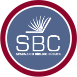

Un cierre que
deje enseñanza.
El grupo se convierte en un equipo de editores: reconoce la forma de concluir y elige cómo mejorar el cierre de un sermón.
Para una exposición de 10 minutos: 4 min de explicación + 5 min de retos + 1 min para un cierre oral. Las respuestas se realizan desde un solo dispositivo.
Recordatorio de una buena conclusión
Es el broche final del sermón. Remarca las verdades esenciales y apela a una respuesta. Puede recapitular, aplicar o ilustrar. Debe ser breve, solemne y natural, sin anunciar que el sermón va a terminar.
¡Conviertan una buena enseñanza en un gran cierre!
Actividad en pausa. Pulsa Continuar para responder.
Ahora, pongan voz al cierre.
Reto oral · 30 segundos
Construyan un cierre breve sobre Romanos 5:1-5. Elijan una forma: recapitulación, aplicación o ilustración. Destaquen la paz o la esperanza en Cristo e inviten a una respuesta.
Revisen juntos: ¿fue breve, solemne, natural y coherente con la enseñanza? La valoración de este cierre la hace el grupo, no una calificación automática.